正·白色系
| 名称 | HEX | RGB | CMYK | 展示 | 缟羽 | #efefef | R:239 G:239 B:239 | C:0 M:0 Y:0 K:6 |
缟羽色是一种淡雅柔和的浅灰白色，灵感源自日本传统色名，类似白鹭羽毛的素净色调。 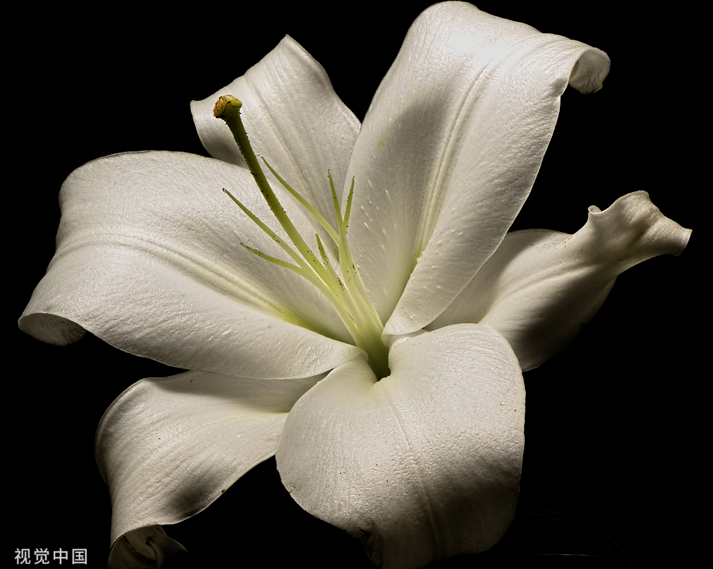 |
凝脂 | #f5f2e9 | R:245 G:242 B:233 | C:0 M:1 Y:5 K:4 |
凝脂色是一种温润柔和的乳白色，如同凝固的油脂般细腻莹润，带有微微的暖调。 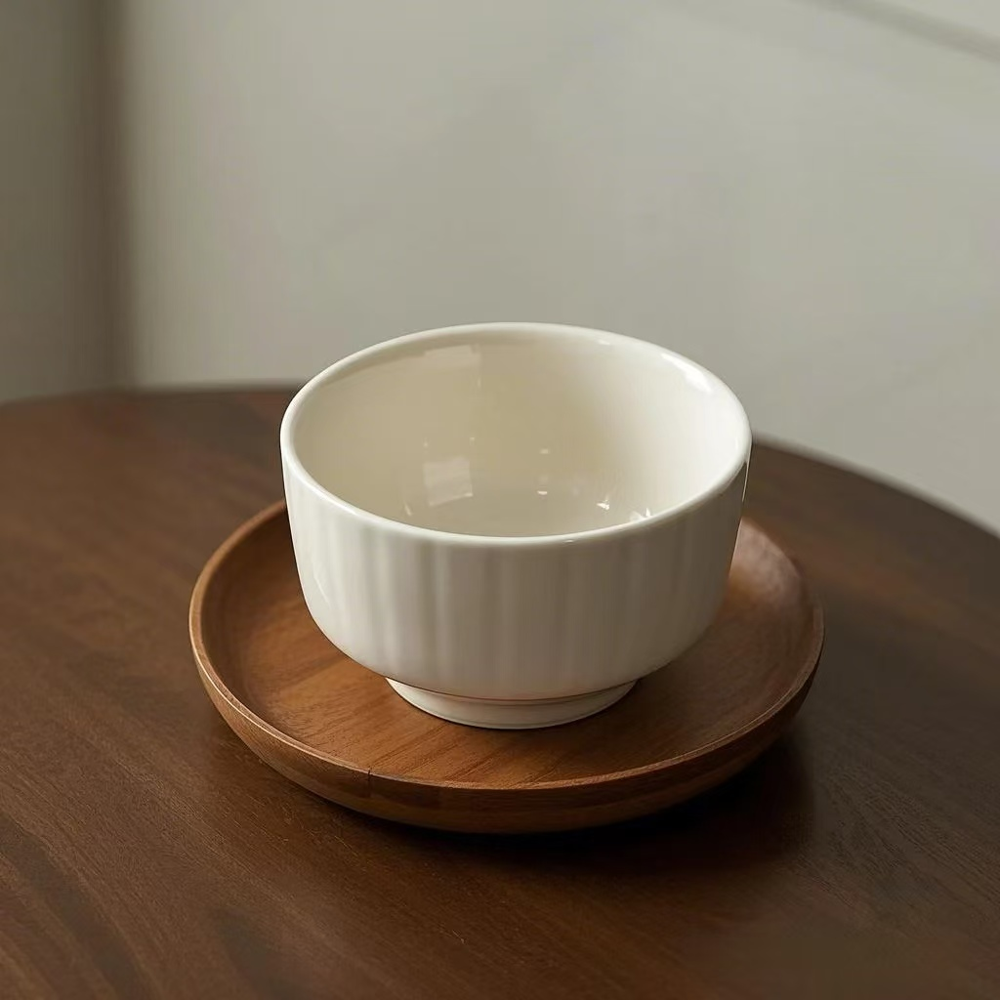 |
浅云 | #eaeef1 | R:234 G:238 B:241 | C:3 M:1 Y:0 K:5 |
浅云色是一种淡雅柔和的浅灰白色，像薄云透日般朦胧素净，带有微妙的通透感。 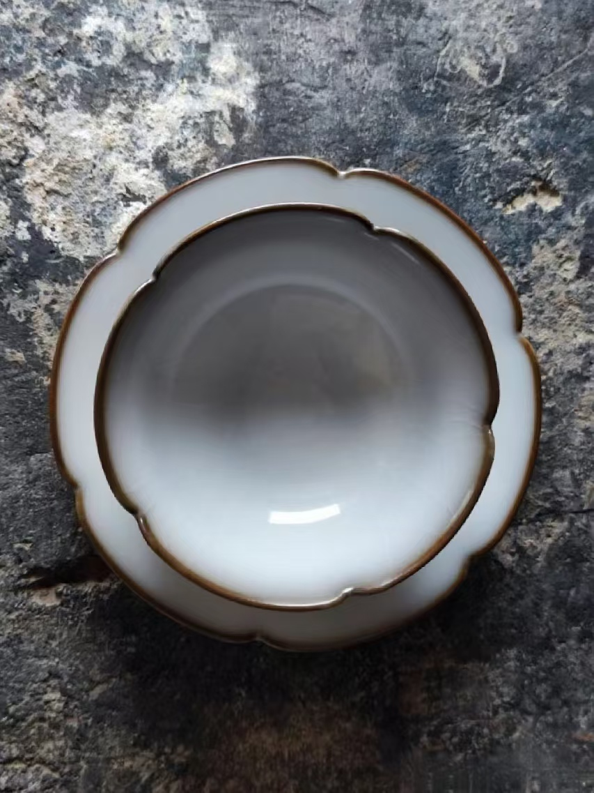 |
二目鱼 | #dfe0d9 | R:223 G:224 B:217 | C:0 M:0 Y:3 K:12 |
二目鱼色是一种深沉而微带青灰的颜色，灵感源自鱼背的暗泽，既有沉稳的古典感，又透出幽邃的层次。 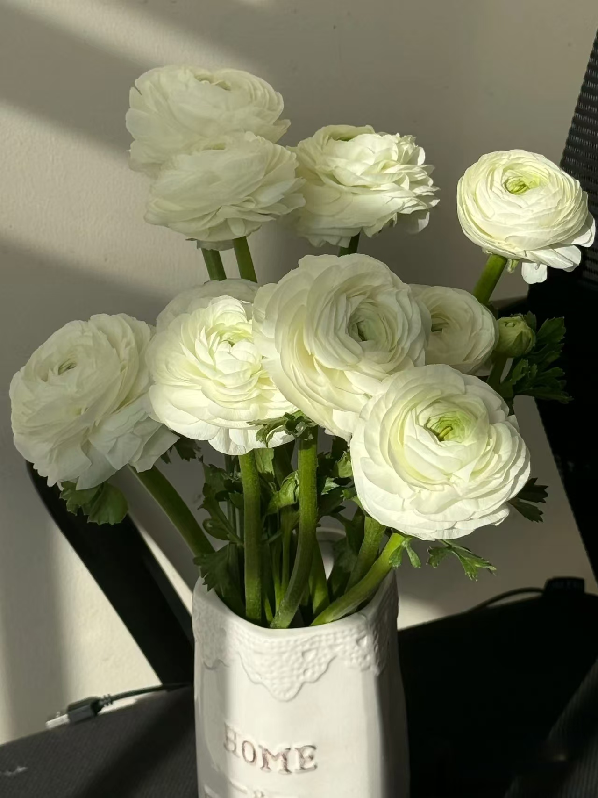 |
山矾 | #f5f3f2 | R:245 G:243 B:242 | C:0 M:1 Y:1 K:4 |
山矾色是一种清透柔和的淡青白色，似早春山矾花瓣的素雅色泽，带有微凉的草木气息。 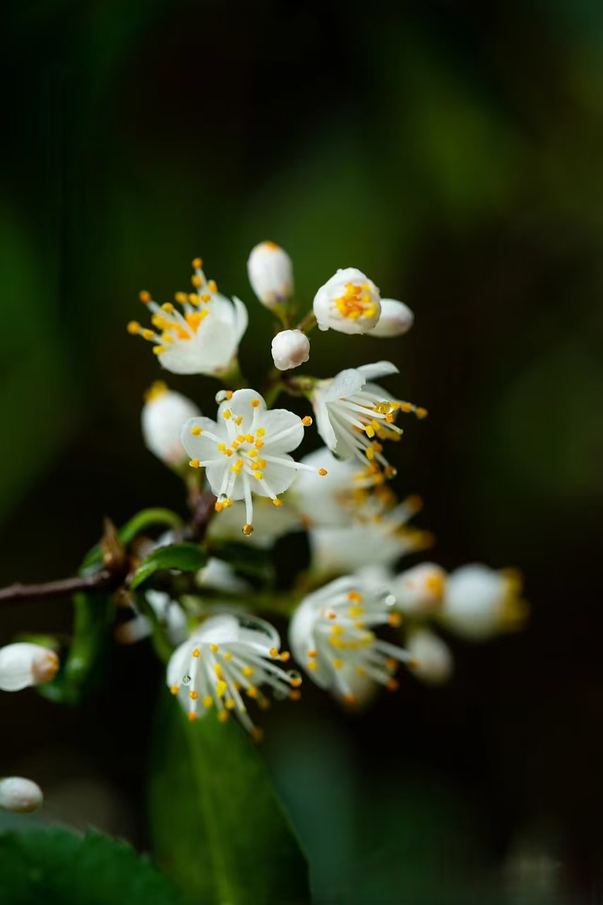 |
影青 | #bdcbd2 | R:189 G:203 B:210 | C:10 M:3 Y:0 K:18 |
影青色是一种淡雅莹澈的浅青白色，如瓷釉透光时的朦胧青影，兼具玉石的温润与冰釉的清透。 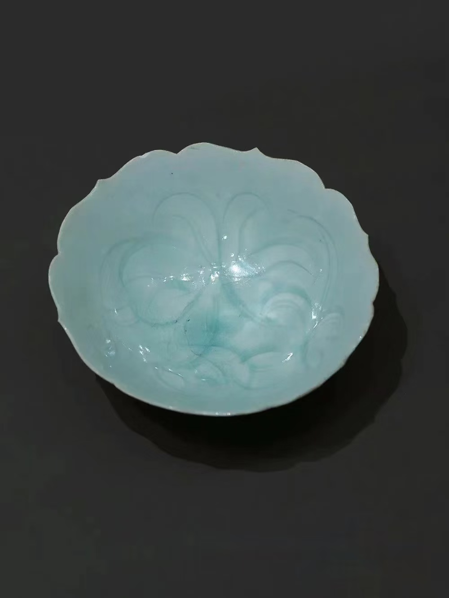 |
白青 | #98b6c2 | R:152 G:182 B:194 | C:22 M:6 Y:0 K:24 |
白青色是一种清冷莹澈的浅青白色，似雪覆远山时透出的淡青底色，既有霜雪的洁净，又含青空的微凉。 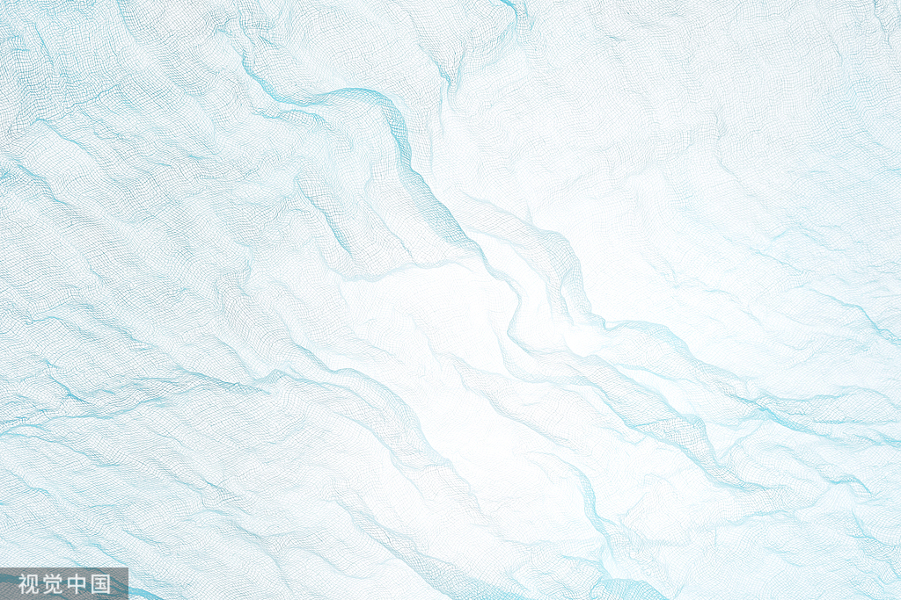 |
米汤娇 | #eeead9 | R:238 G:234 B:217 | C:0 M:2 Y:9 K:7 |
米汤娇是一种温润柔和的淡黄白色，如同米汤般莹润微透，泛着淡淡的暖意，既素雅又透着生活气息。 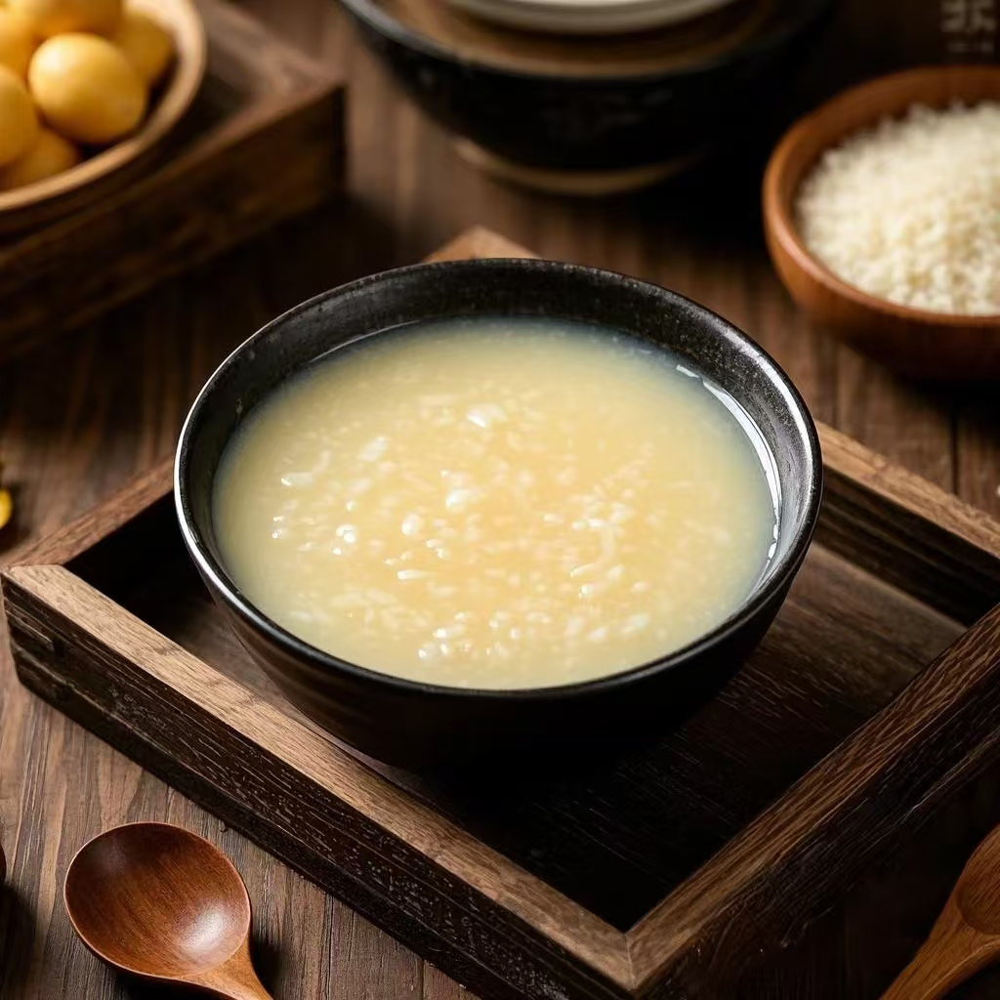 |
青鸾 | #9aa7b1 | R:154 G:167 B:177 | C:13 M:6 Y:0 K:31 |
青鸾色是一种清丽深邃的蓝绿色，灵感源自神话中青鸾神鸟的羽色，既有碧空的澄澈，又含翠羽的华彩，透出灵秀仙逸之气。 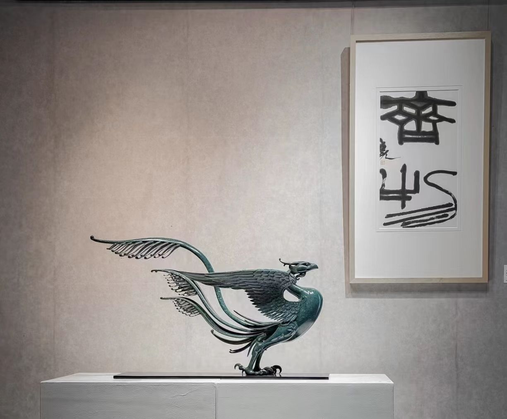 |
精白 | #FFFFFF | R:255 G:255 B:255 | C:0 M:0 Y:0 K:0 |
精白色是一种纯净无瑕的冷调亮白，如新雪覆野或素瓷无釉的极致净色，不掺丝毫杂色，象征至简至臻的东方美学意境。 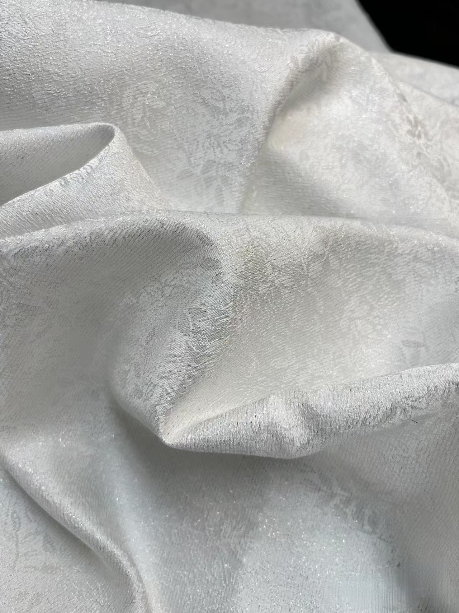 |
象牙白 | #FFFBF0 | R:255 G:251 B:240 | C:0 M:2 Y:6 K:0 |
象牙白是一种温润柔和的乳白色，泛着淡淡的暖黄调，如同象牙天然细腻的质地，既典雅高贵又不失柔和自然。 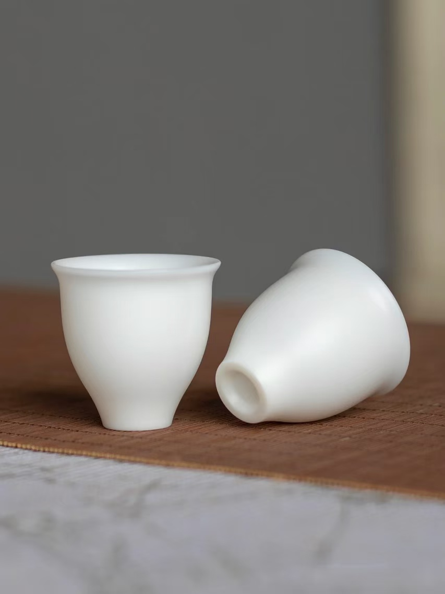 |
雪白 | #F2FDFF | R:242 G:253 B:255 | C:5 M:1 Y:0 K:0 |
雪白色是一种纯净冷冽的亮白色，如新雪覆地般不染纤尘，泛着清冷的微光，象征极致的洁净与空灵。 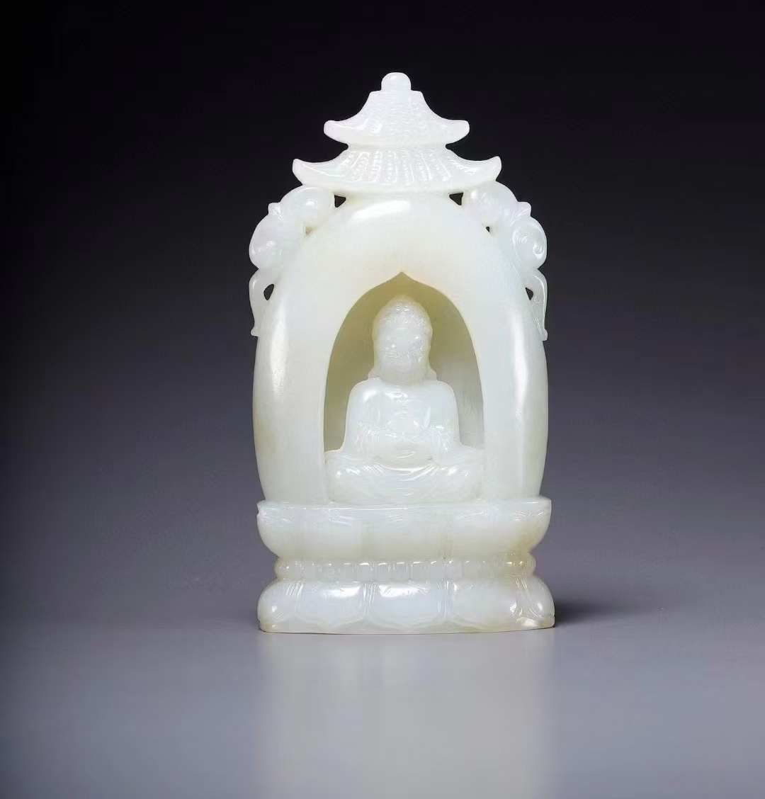 |
月白 | #D6ECF0 | R:214 G:236 B:240 | C:11 M:2 Y:0 K:6 |
月白色是一种清冷柔和的淡蓝白色，似月光洒落夜空时透出的微蓝光晕，既有霜色的洁净，又含天穹的静谧。 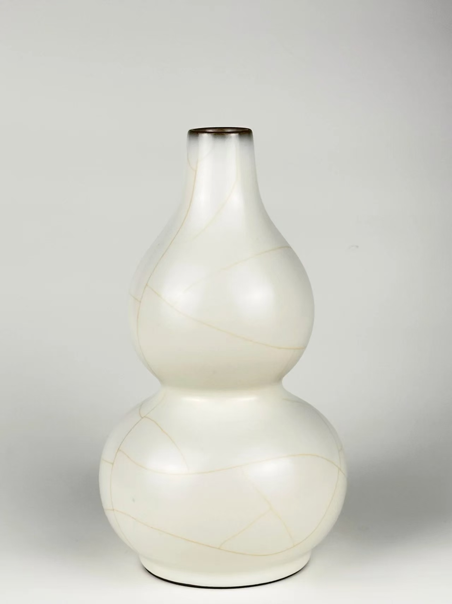 |
|---|